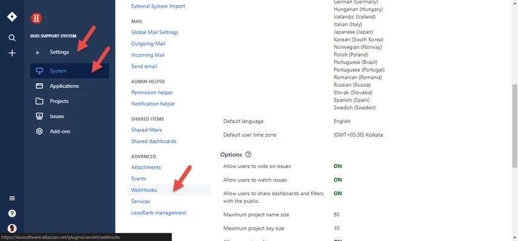

SmoothFlow in JIRA
Go through the guide to get started Smoothflow in your JIRA
{{s.step}}
{{s.title}}
1. Navigate to "Settings"
2. Navigate to "System"
3. Scroll down to the "Advanced" section

4. Click on "WebHooks"
1. Enter a name for the WebHook eg: "Smoothflow Invoker"
2. Set it to "Enabled"
3. Copy the following URL and Paste it in the following field.
https://devprocessengine.plus.smoothflow.io/processengine/JiraWebHook/duosoftwarejira/$%7Bproject.key%7D?jira_attachment_id=${attachment.id}&jira_board_id=${board.id}&jira_comment_id=${comment.id}&jira_issue_id=${issue.id}&jira_issue_key=${issue.key}&jira_mergedVersion_id=${mergedVersion.id}&jira_modifiedUser_key=${modifiedUser.key}&jira_modifiedUser_name=${modifiedUser.name}&jira_sprint_id=${sprint.id}&jira_version_id=${version.id}&jira_worklog_id=${worklog.id}&jira_project_key=${project.key}

4. Navigate to "Events" section and select all the Issue related events as displayed on the image
5. Click on "Create" button to create a webhook
6. On success you would see a message as displayed
1. Navigate to "Settings"
2. Navigate to "Add-ons"
3. Scroll down to the "Smoothflow Settings" section
4. Click on "Smoothflow Account"
Click on "Connect with Smoothflow" button to create a Smoothflow account and get started